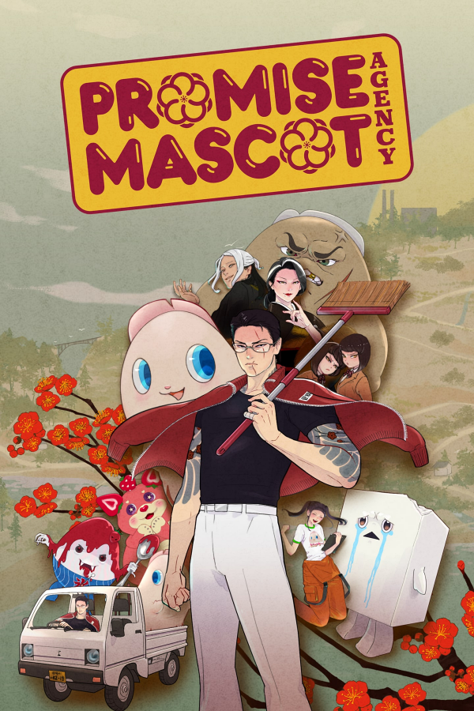

Promise Mascot Agency
Every archived year-end list appearance, including placement and points earned.
About the Game
From the creators of Paradise Killer comes the world’s first (and best) open world mascot management crime drama: this is Promise Mascot Agency. Crime! Drama! Intrigue! What has happened to Michi? Michi, a disgraced yakuza lieutenant, is exiled to a cursed town to turn a bankrupt mascot agency into a profitable enterprise. As he struggles in his new life, can he manage to make a successful business and unravel the conspiracy behind his exile? He’s helped by Assistant Manager Pinky, who happens to be a mascot herself. A new home to explore! What secrets will you discover in your adorable Kei Truck? Explore Michi’s new home of Kaso-Machi in his run-down (but upgradable!) truck. There’s plenty to discover in this forgotten Japanese town – new friends to make, collectibles to find (and destroy), other businesses to partner with and, most importantly, a variety of mascots to recruit. Mascots! Living, breathing creatures of untold flesh! Can you befriend them? As we all know, mascots are living creatures that have coexisted with mankind since the dawn of history. Mascots have their own hopes, dreams and desires and you’ll need to negotiate to recruit them. Some mascots want money, some want fame, some want a rice ball from the local convenience store and some want to see the entire world burn to ashes in glorious hellfire. Who will be your favourite? Watch out, mascots! Will the job be completed successfully? Once they’re on the books, mascots can be trained and sent out on a variety of jobs to make money, gain experience and spread the name of the Promise Mascot Agency far and wide! Of course, jobs don’t always go to plan – whether it’s a narrow doorway, kitchens catching on fire or dreadful nightmare spirits, danger lurks around every corner. It’s up to you to assist your imperilled employee using Hero Cards, cards representing a variety of characters you’ll meet during your days in Kaso-Machi. With tactical card usage, your mascot can overcome any challenge and win hearts, minds and a healthy paycheque. Go go, Michi and Pinky! Solve the mystery and create a home for mascots everywhere!
| Released | 2025-04-10 |
|---|---|
| Developer | Kaizen Game Works |
| Publisher | Kaizen Game Works |
| Genres | Adventure |
| Platforms | Xbox Series S/X, Xbox One, PlayStation 5, Nintendo Switch, PC |
Game information provided by RAWG.
Points by Year
List History
| Year | Source | List | Placement | Points |
|---|---|---|---|---|
| 2025 | Eurogamer | The 50 best games of 2025, ranked | 20 | 3 |
| 2025 | NPR | The best games of 2025, picked by NPR's staff | Unranked | 1 |
| 2025 | Polygon | The 50 best games of 2025, as chosen by Polygon | 37 | 1 |
| 2025 | SUPERJUMP | 50 Outstanding Games Released in 2025 | Unranked | 1 |